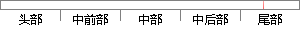

在分页功能的实现过程中，选择了更为直观、现代的分页方式。
片段位置图

相似结果|
相似片段 1：发过程中，不仅要顾及当前的数据量规模，还要顾及到W曲数据库应用的同益广泛导致的数据量规模越来越大，从长远来看，采用数据库分页模式实现数据查询分页功能无疑是一个明智的选择。3．3本章小结数据查询分页功能
相似片段 2：着服务器运行效率的高低，本文详细分析了ASP．NET中的常用分页技术运用方式，并提 出优选的技术方案。关键词：分页技术；aSp．net在现代Web应用程序的开发过程中，动态网页技术依靠数据库与后台程序，实现
相似片段 3：的提高。ASP．NET提供了三个功能强大的列表控件 ：GridView、DataList和 Repeater控件 ，但其 中只有GridView控件提供分页功能。选择控件方式来实现数据显示是一种非常便捷
相似片段 4：开发变得更为简单和方便!并且有效地保证了代码的安全性9:!;<"下面将以最常用的服务器端控件EF.FG20H在本系统中实现的个性化分页功能为例!进行更具体地说明"在文书档案管理过程中!文书档案管理员可能
|
※ 片段修改建议 ※
近似词参考：- 功能：功效
- 过程中：过程当中
- 更为：更加
- 现代：当代
- 方式：体例 体式格局 方法
系统自动生成语句：在分页功效的实现过程当中，选择了更加直观、当代的分页体例。
注：本片段修改建议为系统自动生成，仅供参考。